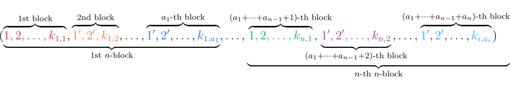

9.1. Operads on Sets
Let \(Y, Z\) be sets. Consider a function \(g: Y \to Z\). The way we've been taught to think about this function is as a process where we're sending an element \(y \mapsto g(y)\) in a well-defined manner.
Furthermore, if we have another function \(f: X \to Y\),
then we can set up a pipeline \(x \mapsto f(x) \mapsto g(f(x))\). This then
establishes an obvious function \(g \circ f: X \to Z\).
\
 But the way that we've thought about functions, and more generally morphisms,
is actually over-simplistic. Here we will demonstrate that we can \emph{generalize
the concept of morphism composition}.
But the way that we've thought about functions, and more generally morphisms,
is actually over-simplistic. Here we will demonstrate that we can \emph{generalize
the concept of morphism composition}.
Denote \(\aend_n(X)\) to be the set of all functions \(f:X^n \to X\). Then for such a function, if we stick with our simplistic concept of plugging things in, we imagine something like \
However, a more natural way is to imagine that we're taking values
\(n\)-many values \(x_i \in X\) and plugging them into the function \(f: X^n \to X\).
That is, we don't have to just think of one \(g: Y \to X^n\) to form a concept of
composition. We can instead imagine that each of these \(x_i\) values came
from functions \(g_1: Y_1 \to X\), \(g_2: Y_2 \to X, \cdots, g_n: Y_n \to X\).
\
his is in its own right a function; a function from \(Y_1 \times Y_2 \times Y_n \to X\).
It's a generalization of function composition; when we only have one \(g_1\) we just
get back our original notion of function composition. We've been restricting ourselves this whole time.
Now to make this even more interesting, suppose \(Y_1 = X^{a_1}, Y_2 = X^{a_2}, \dots, Y_n = X^{a_n}\)
where \(a_1, a_2, \dots, a_n\) are positive integers. That is, suppose we have that \(g_i \in \aend_{a_i}(X)\).
\
he above composition can be expressed as \(f(g_1, g_2, \dots, g_n)\) which we may
denote as
and note that we've construction a function in \(\aend_{a_1 + a_2 + \cdots + a_n}(X)\) using one \(f \in \aend_n(X)\) and \(n\)-many \(g_i \in \aend_i(X)\). Then what we see is that our composition map is really a function that can be written formally as
Then we can make this even more interesting. Each \(g_i: X^{a_i} \to X\) is just like \(f: X^n \to X\). Hence we can repeat the same process on each \(g_i\), and plug a family of functions \(h_{i, j}: X^{k_{i,j}}\to X\) where \(j = 1, 2, \dots, a_i\). \ ow there are two ways to think about this function. There is
which first composes \(f\) with the \(g\)-family, and then composes with the \(h\)-family, and then there is
which first composes each \(g\) with its respective \(h\)-family, and then composing the resulting structure with \(f\). Since these are just functions, and individual composition is associative, the above two ways are the same. This construction which we have demonstrated is an example of an operad; specifically, a symmetric operad. The previous example can now be seen as motivation for the following two definitions (which will definitely need repeated read-overs).
A nonsymmetric operad \(X\) in Set consists of a family of sets \(\{X_n\}_{n=1}^{\infty}\), an identity element \(I \in X_1\) (whose purpose will soon be elaborated), and a composition map
which must exist for each \(n = 1, 2, \dots\), and any \(a_1, a_2, \dots, a_n \in \mathbb{N}\), such that \begin{description} \item[(NS-OP1: Associativity.) ] Let \(n \in \mathbb{N}\) and consider \(f \in X_n\). Let \(a_1, a_2 \dots, a_n \in \mathbb{N}\). Then
\item[(NS-OP2): Identity.] For every \(f \in X_n\) we have that
\end{description}
A symmetric operad is a nonsymmetric operad \(X\) with a right group action \(\cdot_n: X_n \times S_n \to X_n\) by the symmetric group \(S_n\) for each \(n = 1, 2, \dots\), subject to the following axioms. \begin{description} \item[(S-OP1: Equivariance 1)] Let \(f \in X_n\) and pick \(g_{1} \in X_{a_1}, \dots, g_n \in X_{a_n}\) for some \(a_1, a_2, \dots, a_n \in \mathbb{N}\). Then for a \(\tau \in S_n\), we must have
where \(\tau' \in S_{a_1 + \cdots + a_n}\). Here, \(\tau'\) is a block permutation that swaps the \(i\)-th block with the \(\tau(i)\)-th block. That is, if \(\tau \in S^n\) as a permutation acts as
then \(\tau' \in S_{a_1 + a_2 + \cdots + a_n}\) acts as
\item[(S-OP2: Equivariance 2)]
Let \(f, g_i\) is as above, and choose \(\sigma_1 \in S_1, \dots, \sigma_{n} \in S_n\).
Then we have that
where \((\sigma_1, \sigma_2, \dots, \sigma_n) \in S_{a_1 + a_2 + \cdots + a_n}\) is the permutation described as below.
\begin{gather*} (\overbrace{\textcolor{Red}{1, 2, \dots, a_1}}^{\text{1st block}} ,\dots, \overbrace{\textcolor{RoyalBlue}{a_1 + \cdots + a_{n-1}+ 1,, \dots, a_1 + \cdots + a_{n-1}a_n}}^{n\text{-th block}} ) \ \mapsto\ (\underbrace{\sigma_1(\textcolor{Red}{1}), \sigma_1(\textcolor{Red}{2}), \dots, \sigma_1(\textcolor{Red}{a_1})}_{\text{1st block}}, \dots,
\underbrace{\textcolor{RoyalBlue}{a_1 + \cdots + a_{n-1}+} \sigma_n(\textcolor{RoyalBlue}{1}), \dots, \textcolor{RoyalBlue}{a_1 + \cdots + a_{n-1}+}\sigma_n(\textcolor{RoyalBlue}{a_n}) }_{n\text{-th block}} ) \end{gather*}
\end{description}
We can continue with our previous construction concerning the family of sets
to demonstrate that it forms a symmetric operad. As we already established associativity NS-OP1, we need to verify the identity axiom NS-OP2. Such an identity element can be chosen if we select \(I = 1_X: X \to X\). On one hand we have for any \(f \in X^n\) that
while on the other we have that \(I \circ_n f = 1_X \circ f = f\). Next, define a group action of \(S_n\) on \(\aend_n(X)\) as
We now verify S-OP1 with this group action. Let \(f \in \aend_n(X)\) and \(g_i \in \aend_i(X)\) for \(i = 1, 2, \dots, n\). For a given \(\tau \in S_n\), consider the points \((x_1, \dots, a_1) \in X^{a_1}, \dots, (x_1, \dots, a_n) \in X^{a_n}\). Observe that \((f \cdot \tau) \circ_{a_1, \dots, a_n}(g_1, \dots, g_n)\) first plugs in the each \((x_{a_{i}-1}, \dots, x_{a_i})\) into \(g_i\), which is then plugged into \(f\). However, the action of \(\tau\) swaps these resulting coordinates. Thus we get that
How do we write this more formally? Well, to answer that, we need to know the answer to the following question: which \(g_i(x_{a_{i-1}+1}, \dots, x_{a_i})\) maps to, say, the 1st coordinate? This is equivalently to asking: what is \(\tau^{-1}(1)\)? Hence we see that
where \(\tau'\) is the block permutation described in the definition. Thus we see that
as desired. Thus we have S-OP1. Finally, we show S-OP2, which is a bit easier to demonstrate. As before, let \(f, a_i\) and \(g_i\) be as described before. Let \(\sigma_1 \in S_1, \dots, \sigma_n \in S_n\). Then
Thus we see that
so that S-OP2 is satisfied. All together, we have that for any set \(X\), the family of sets \(\aend_{n}(X)\) forms a symmetric operad.
Consider the family of sets \(\text{Assoc}_n = S_n\) where each level is the \(n\)-th symmetric group. Suppose that \(\tau \in S_n\) and that \(\sigma_1 \in S_{a_1}, \sigma_2 \in S_{a_2}, \dots, \sigma_n \in S_{a_n}\) for \(a_1, a_2, \dots, a_n \in \mathbb{N}\). Then we define
as a permutation of \(a_1 + a_2 + \cdots + a_n\) letters. Before we describe the permutation, we'll introduce some notation. Consider the (ordered) tuple of the first \(a_1 + \cdots + a_n\) integers.
We can more compactly denote this tuple as
where from either context or coloring it will be clear what each \(1', 2',\dots\)
indicates. For example, above we'll have that
\(\textcolor{Green}{1' = a_1 + 1}\) and \(\textcolor{Green}{2' = a_1+ 2}\)
wheres
\(\textcolor{RoyalBlue}{1' = (a_1 + \cdots + a_{n-1}) + 1}\) and \(\textcolor{RoyalBlue}{2' = (a_1 + \cdots + a_{n-1}) + 2}\).
With that said, we can define \(\tau \circ_{a_1, \dots, a_n}(\sigma_1, \sigma_2, \dots, \sigma_n) \in S_{a_1 + a_2 + \cdots + a_n}\)
by its action on such a tuple, pictured below.
\
 which can be rewritten more formally as
which can be rewritten more formally as
Now for each \(\sigma_i \in S_{a_i}\), let \(\rho_{i, j} \in S_{k_{i,j}}\) for \(j = 1, 2, \dots, a_i\) and for \(k_{i,j} \in \mathbb{N}\). For notational convenience, denote \(K = k_{1,1}+ \cdots + k_{1,a_1}+ \cdots + k_{n,1} + \cdots + k_{n, a_n}\). By our above definition, we can construct a permutation in \(S_{K}\) by composing \(\tau\) with the \(\sigma\)-family and with the \(\rho\)-family. There are two possible ways to construct such a permutation (and we'll show that they are equivalent, therefore satisfying NS-OP1). But before we do that we must consider the first \(K\) integers. This will be a huge tuple; in full notation this is \ Using our previous notation we can rewrite this as
where again, for example, \(\displaystyle \textcolor{Orange}{1' = k_{1,1}+1}\) whereas \(\displaystyle \textcolor{RoyalBlue}{1' = \sum_{i}^{n-1}\sum_{j=1}^{a_i}k_{i, j} + (k_{n, 1} + \cdots + k_{n, (a_n-1)}) +1}\).
Now we will first want to calculate
The first step to computing this is to note that each \(\rho_{i,j}\) permutes the numbers within its block. \begin{tikzcd} ( \overbrace{\textcolor{Red}{1, 2, \dots, k_{1,1}}}^{1\text{st block}}, \overbrace{\textcolor{Orange}{1'}, \textcolor{Orange}{2'}, \dots, \textcolor{Orange}{k_{1,2}}}^{2\text{nd block}}, \dots, \hspace{-0.5cm} \overbrace{\textcolor{ProcessBlue}{1'}, \textcolor{ProcessBlue}{2'}, \dots, \textcolor{ProcessBlue}{k_{i, j}}}^{(a_1 + \cdots + a_{i-1}+j)\text{-th block}} \hspace{-0.5cm} ,\dots, \overbrace{\textcolor{RoyalBlue}{1'}, \textcolor{RoyalBlue}{2'}, \dots, \textcolor{RoyalBlue}{k_{n, a_n}}}^{(a_1 + \cdots + a_n)\text{-th block}} ) \arrow[d, "\rho_{1,1}", start anchor = {[xshift = -5.7cm]}, end anchor = {[xshift=-5.7cm]}] \arrow[d, "\rho_{1,1}", start anchor = {[xshift = -5.7cm]}, end anchor = {[xshift=-5.7cm]}] \arrow[d,draw = none, start anchor = {[xshift = -3cm]}, end anchor = {[xshift=-3cm]}, "\raisebox{+0.2ex}{\dots}" description] \arrow[d, "\rho_{i,j}", start anchor = {[xshift = 0cm]}, end anchor = {[xshift=0cm]}] \arrow[d,draw = none, start anchor = {[xshift = 1.5cm]}, end anchor = {[xshift=1.5cm]}, "\raisebox{+0.2ex}{...}" description] \arrow[d, "\rho_{n, a_n}", start anchor = {[xshift = 3.4cm]}, end anchor = {[xshift=3.4cm]}] \ ( \underbrace{\rho_{1,1}(\textcolor{Red}{1}), \rho_{1,1}(\textcolor{Red}{2}), \dots, \rho_{1,1}(\textcolor{Red}{k_{1,1}})}{1\text{st block}}, \dots, \underbrace{\rho{i,j}'(\textcolor{ProcessBlue}{1})\rho'{i,j}(\textcolor{ProcessBlue}{2}), \dots, \rho'{i,j}(\textcolor{ProcessBlue}{k_{i,j}})}{(a_1 + \cdots + a{i-1}+j)\text{-th block}}, \dots, \underbrace{\rho_{n, a_n}'(\textcolor{RoyalBlue}{1}), \rho_{n, a_n}'(\textcolor{RoyalBlue}{2}), \dots, \rho_{n, a_n}'(\textcolor{RoyalBlue}{k_n, a_n})}{(a_1 + \cdots + a{n})\text{-th block}} )) \end{tikzcd} Now that we've applied the \(\rho\) permutations, we must apply the permutation \(\tau \circ_{a_1, \dots, a_n} (\sigma_1, \sigma_2, \dots, \sigma_n)\) in \(S_{a_1 + \cdots + a_n}\). This will instead be a block permutation. Hopefully it is now clear why we were paying so much attention and to and keeping track of the blocks; we knew ahead of time that we were going to permute our \(a_1 + \cdots+ a_n\) blocks by using our \(S_{a_1 + \cdot+ a_n}\) permutation \(\tau \circ_{a_1, \dots, a_n} (\sigma_1, \sigma_2, \dots, \sigma_n)\) in \(S_{a_1 + \cdots + a_n}\).
Recall that for \(\rho_{i, j}\), \(i\) ranges from \(1\) to \(n\) while \(j\) ranges from \(1\) to \(a_i\). Hence if we permute a block, we can represent it as follows. \ hich can be written more formally (that is, more horribly) as
At this point we'll want to see that this is the same as
To do this we need to think about each \(\sigma_i \circ_{k_{i, 1}, \dots, k_{i, a_i}}(\rho_{i,1}, \dots, \rho_{i, a_i})\) which isn't too bad. Each is a permutation in \(S_{k_{i,1} + \cdots + k_{i, a_i}}\), and hence a permutation of the (ordered) tuple below.
which we again abbreviate as
With those notation above each permutation acts as \ hich can be more formally understood as the tuple \begin{equation} ( \overbrace{\rho'{i, \sigma_i^{-1}(1)}(1), \rho'{i, \sigma_i^{-1}(1)}(2), \dots, \rho'{i, \sigma_i^{-1}(1)}(k{i, \sigma_1^{-1}(1)})}^{1\text{st tuple}}, \dots, \overbrace{\rho'{i, \sigma_i^{-1}(a_i)}(1), \rho'{i, \sigma_i^{-1}(a_i)}(2), \dots, \rho'{i, \sigma_i^{-1}(a_i)}(k{i, \sigma_i^{-1}(a_i)})}^{a_i\text{-th tuple}} ) \end{equation} Now that we understand what each \(\sigma_i \circ_{k_{i, 1}, \dots, k_{i, a_i}}(\rho_{i,1}, \dots, \rho_{i, a_i})\) does for \(i = 1, 2, \dots, n\), and because we know that \(\tau \in S_n\), this means we can compose \(\tau\) with this family of \(n\)-permutations, which will give rise to a \(S_{k_{1,1}+ \cdots + k_{1, a_1} + \cdots + k_{n, 1} + \cdots + k_{n, a_n}}\) permutation. To calculate this we just now directly apply their composition. This will act on the \(k_{1,1} + \cdots k_{1, a_1} + \cdots + k_{n, 1} + \cdots + k_{n, a_n}\) tuple \  y rearranging the tuple as below \ nd using (\ref{tuples}) we know that this becomes \ The above tuple can be (again, horribly) understood as
Which shows that
so that NS-OP1 is satisfied. Now verifying NS-OP2 is simple; note that as \(S_1\) has one element, we are forced to identify our identity element as \(\sigma_1\), the unique permutation of one element that doesn't do anything. Then for any \(\tau \in S_n\), we of course have that \(\tau \circ_{1, 1, \dots, 1}(\sigma_1, \sigma_1, \dots \sigma_1) = \tau\), as each element is unchanged by \(\sigma_1\) before \(\tau\) is applied. We also know that \(\sigma_1 \circ_n (\tau) = \tau\), since this is just applying \(\tau\) and then applying the trivial block permutation to the \(n\) elements.
Now we show S-OP1. As we need a right action of \(S_n\) on the \(n\)-th level of our operad, which also happens to be \(S_n\), an evident choice would be to just take the group product. Hence for any \(\sigma \in S_n\), we say \(\tau \in S_n\) acts on \(\sigma\) to give rise to
which is clearly in \(S_n\).
To demonstrate S-OP1, let \(\tau, \rho \in S_n\), and \(\sigma_1 \in S_{a_1}, \dots, \sigma_n\in S_{a_n}\) for \(a_i \in \mathbb{N}\). To compute \((\tau \cdot \rho)\circ_{a_1, \dots, a_n}(\sigma_1, \dots, \sigma_n)\), denote an (ordered) tuple of the first \(a_1 + \cdots + a_n\) integers as
Then we see that \((\tau \cdot \rho)\circ_{a_1, \dots, a_n}(\sigma_1, \dots, \sigma_n)\) acts on the tuple to give rise to
On the other hand we need to also compute \((\tau \circ_{a_{\rho^{-1}(1)}, \dots, a_{\rho^{-1}(n)}}(\sigma_{\rho^{-1}(1)}, \dots, \sigma_{\rho^{-1}(n)}))\cdot \rho'\) where \(\rho'\) is the evident block permutation. However, this is really just \((\tau \circ_{a_{\rho^{-1}(1)}, \dots, a_{\rho^{-1}(n)}}(\sigma_{\rho^{-1}(1)}, \dots, \sigma_{\rho^{-1}(n)}))\circ \rho'\); below we see that its action on an ordered \(a_1 + \cdots + a_n\) tuple is as we would expect. \ herefore we see that
so that S-OP1 is satisfied. We just now need to show S-OP2 is satisfied,
which is nearly immediate. We will however not pretend we're too good to show
this and demonstrate it anyways.
For each \(\sigma_i \in S_{a_i}\), pick \(\rho_i \in S_{a_i}\).
Observe that \(\tau \circ_{a_1, \dots, a_n}(\sigma_1 \cdot \rho_1, \dots, \sigma_n \cdot \rho_n)\)
\
 eturns the same result as \((\tau \circ_{a_1, \dots, a_n}(\sigma_1, \dots, \sigma_n))\cdot(\rho_1, \dots, \rho_n)\)
\
ince \((\tau \circ_{a_1, \dots, a_n}(\sigma_1, \dots, \sigma_n))\cdot(\rho_1, \dots, \rho_n) =
(\tau \circ_{a_1, \dots, a_n}(\sigma_1, \dots, \sigma_n))\circ(\rho_1, \dots, \rho_n)\) in our case.
As we have that S-OP2 is satisfied, we have that \(\text{Assoc}_n = S_n\) is a symmetric operad.
eturns the same result as \((\tau \circ_{a_1, \dots, a_n}(\sigma_1, \dots, \sigma_n))\cdot(\rho_1, \dots, \rho_n)\)
\
ince \((\tau \circ_{a_1, \dots, a_n}(\sigma_1, \dots, \sigma_n))\cdot(\rho_1, \dots, \rho_n) =
(\tau \circ_{a_1, \dots, a_n}(\sigma_1, \dots, \sigma_n))\circ(\rho_1, \dots, \rho_n)\) in our case.
As we have that S-OP2 is satisfied, we have that \(\text{Assoc}_n = S_n\) is a symmetric operad.
An morphism of operads \(F: X \to Y\) between two (symmetric) operads \(X, Y\) with units \(I \in X_1\) and \(J \in Y_1\) and \(S_n\) group actions \(\cdot\) and \(*\) is a family of maps \(F_n: X_n \to Y_n\) such that \begin{description} \item[(M-OP1)] \(F_1(I) = J\) \item[(M-OP2)] If \(f \in X_n\) and \(g_1 \in X_{a_1}, \dots, g_n \in X_{a_n}\) for \(a_i \in \mathbb{N}\), then
\item[(M-OP3)] If \(f \in X_n\) and \(\tau \in S_n\), then
\end{description} Note: in the case where \(X, Y\) are symmetric operads, we define a morphism between \(X\) and \(Y\) to be a family of maps \(F_n: X_n \to Y_n\) such that only M-OP1 and M-OP2 hold.
A algebra over an Operad \(X\) is a morphism of operads \(F: X \to \aend_A\) where \(A\) is some set. Spelled out, this is a mapping
so that we're mapping elements of our operad to \(n\)-ary operations over \(A\). This mapping also requires that
-
[1.] \(F_1(I) = \id_A: A \to A\)
-
[2.] For \(f \in X_n\), \(g_i \in X_{a_i}\) for \(i = 1,2, \dots, n\),
Diagrammatically, this means the following diagrams commutes: \ Or, more visually, \
- [3.] Finally, we have that if \(\tau \in S_n\), then for \(f \in X_n\) and \((a_1, \dots, a_n) \in A^n\), then
Let \(X\) be an operad. A \textbf{morphism \(\Phi: F \to G\) between algebras} \(F: X \to \aend_A\) and \(G: X \to \aend_B\) over \(X\) is a function \(\phi: A \to B\) such that, for \(f \in X_n\) and \((a_1, \dots, a_n) \in A^n\),
The above relation can be more conveniently expressed as the diagram below commuting: \ which must hold for all \(f \in X_n\) with \(n \in \mathbb{N}\). Now suppose that for an operad \(X\) we have
\noindent
\begin{minipage}{0.7\textwidth}
three algebras
such that \(\Phi: F \to G\) and \(\Psi: G \to H\) are morphisms of algebras given by functions \(\phi: A \to B\) and \(\psi: B \to C\). A natural question is whether or not one can define a morphism \(\Psi \circ \Phi: F \to G\). This is however immediate upon realization that we can stack the diagrams to see that \(\Phi \circ \Psi: F \to H\) is a morphism of algebras. \end{minipage} \begin{minipage}{0.3\textwidth} \ \end{minipage}
As a result, if we are given an operad \(X\), we can create a category \(**Alg**_X\) whose objects are algebras \(\Phi: X \to \aend_A\) and whose morphisms are morphisms between such algebras. These categories actually return ordinary categories that we've dealt with in the past.
Consider the operad \(\text{Assoc}_n = S_n\). Then we have that
where Mon is the category of monoids. (In terms of set theory, we're being sloppy; but if anyone challenges this we can just pull out a Grothendieck universe and satisfy their demands.) To demonstrate this isomorphism we must produce a pair of inverse functors between these categories.
Before we do that, first consider an object in this category, which is a family of functions \(F_n: S_n \to \hom_{**Set**}(A^n, A)\) for some set \(A\). To save some space, denote \(\hom_{**Set**}(A^n, A)\) as \([A^n, A]\). Then the fact that \(F: **Assoc**_n \to \aend_A\) is an algebra gives us that the diagram on the left commutes. \ As this diagram commutes, we can follow the specific path which is taken by the identity elements \(e_2 \in S_2\) and \(e_1 \in S_1\). If we denote \(F_n(e_n) = \mu_n: A^n \to A\), then we see that \(\mu_3 = \mu_2(\mu_2, \id_A)\). Note that in particular, \(\mu_1 = \id_A\) by hypothesis. Hence for \(a, b, c \in A\), we see that \(\mu_3 = \mu_2(\mu_2(a, b), c)\). Conversely, we can repeat the same thing with \(S_1\) and \(S_2\) swapped, and obtain a commutative diagram on the left: \ and following the identity elements again grants us that \(\mu_3 = \mu_2(\id_A, \mu_2)\). Hence we see that for \(a, b ,c \in A\) \(\mu_3(a, b, c) = \mu_2(a, \mu_2(b, c))\). All together we have that
What does this mean? Perhaps this will make it more clear: denote \(\mu_2(a,b) = a \cdot b\). Then this means that
This means that we've proved that \(A\) is a set equipped with a binary operator \(\mu_2: A \times A \to A\) which is associative! This is almost a monoid; we're just missing an identity element. However, note that